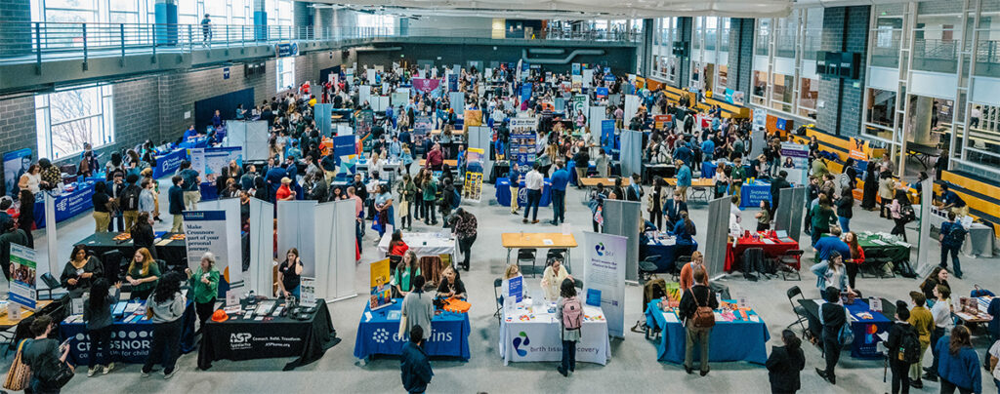

Page 1: | Home
Page 2: | The Case For Digital Advertising
Page 3: | The Case For In-Person Advertising
Page 4: | Final Thoughts
Page 5: | Works Cited
Ultimately, the best strategy to market job fairs to students is a combination of both digital
and in-person advertising. Each side is capable of working in tandem with the other, so there is
no need to solely focus on one strategy. The goal is to increase attendance for these events, and
rejecting one side will only make it more difficult to achieve that goal. The benefits of digital
marketing is that it is more accessible for students and reaches a wider audience. The benefits of
in-person marketing is that it leaves a much stronger, more memorable impression on students
and is more interactive.
